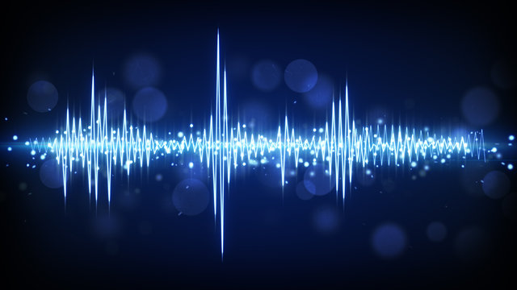

Capitolo 3
Vai al Indice
Vai alla Copertina
Vai al Capitolo 1
Vai al capitolo 2
Vai al capitolo 4
Vai al capitolo 5
la Codifica
La codifica si riferisce al processo di scrivere istruzioni o comandi in un linguaggio di programmazione per creare un programma o un'applicazione. In altre parole, è l'atto di trasformare un'idea, una logica o una serie di operazioni in un formato che un computer possa eseguire.
Nel contesto della programmazione, la codifica significa prendere una soluzione teorica (come un algoritmo) e implementarla in un linguaggio che il computer può comprendere (ad esempio, Python, Java, C++, ecc.). Questo processo include la scrittura di linee di codice che definiscono come un'applicazione o un sistema dovrebbe comportarsi.
Alcuni aspetti importanti della codifica:
Sintassi: Ogni linguaggio di programmazione ha una sintassi specifica, cioè un insieme di regole che definiscono come devono essere scritte le istruzioni. Per esempio, in Python si usano indentazioni per definire blocchi di codice, mentre in linguaggi come C o Java si usano parentesi graffe.
Algoritmi: La codifica non è solo una questione di scrivere comandi, ma anche di pensare alla logica del programma. Un algoritmo è una serie di passi logici che risolvono un problema. Durante la codifica, si implementano questi algoritmi in un linguaggio comprensibile per il computer.
Debugging: La codifica non si limita solo alla scrittura di codice. Durante lo sviluppo di un programma, è fondamentale testare e correggere eventuali errori o bug. Questo processo è noto come debugging e fa parte integrante della codifica.
Ottimizzazione: Una volta che il codice funziona correttamente, è possibile ottimizzarlo per migliorarne l'efficienza, ridurre l'utilizzo delle risorse (come la memoria) o migliorare la velocità.
La codifica è essenziale non solo per lo sviluppo di software, ma anche per la creazione di siti web, applicazioni mobili, intelligenza artificiale, sistemi embedded e molto altro. In breve, è la base della creazione di tutto ciò che riguarda l'informatica.
Video: Un formato di dati che rappresenta una sequenza di immagini in movimento, codificata in diversi formati come MP4, AVI, MOV. Ogni frame del video è composto da una serie di pixel codificati.
Audio: Dati che rappresentano suoni codificati in formati come MP3, WAV, AAC. L'audio digitale è basato su campionamenti del suono, rappresentati numericamente.
Immagine: Una rappresentazione visiva codificata in formati come JPEG, PNG, GIF. Ogni immagine è costituita da pixel e il loro colore viene rappresentato con valori numerici.
Numeri: Dati che rappresentano valori numerici, possono essere interi, decimali, o in formato scientifico. Vengono codificati in vari formati come binario, decimale o esadecimale.
Binario: Un sistema di codifica basato su due simboli (0 e 1), utilizzato per rappresentare dati digitali a livello di bit, come in computer e dispositivi elettronici.
Caratteri: Simboli utilizzati nei testi, codificati tramite sistemi come ASCII o Unicode, che associano valori numerici a lettere, numeri e simboli.
Suono: Una rappresentazione digitale delle onde sonore, codificata attraverso campioni e frequenze, come nel caso dei file WAV o MP3, utilizzata per memorizzare o trasmettere audio.
Codifica dei caratteri
I computer sono creature elettriche: lavorano con segnali. E il modo più sicuro per gestire un segnale è distinguerlo in due stati opposti e chiari. Tutto il resto colori, parole, immagini, suoni deve trovare un modo per vivere dentro questa logica binaria.
Ma come fai a raccontare una storia con solo due simboli? Crei un codice.
Una convenzione.
Una mappa.
E qui entra in gioco l’ASCII.
L'ASCII è una tabella. Una tavola antica del digitale. Ogni simbolo che conosci lettere, numeri, punteggiatura ha un numero corrispondente. La A è il 65, lo spazio è il 32, il punto è il 46. Non sono numeri casuali. Sono un ordine, una sequenza, una grammatica primitiva che permette a due macchine di capirsi. Tu premi una lettera, il computer vede un numero. E quel numero viene tradotto in binario.
Quindi la lettera A, che è 65, diventa:
01000001
Otto bit. Otto piccole decisioni.
È tutto lì.
Una lettera è solo una posizione in un alfabeto numerico.
E quel numero è solo una serie di 0 e 1.
E quella serie è tutto ciò che serve per comunicare.
L’ASCII non ha emozioni. Non ha significato di per sé. È un ponte. Un’interfaccia tra il pensiero umano e il cervello artificiale. Prima che il computer possa scrivere una poesia, deve capire cosa vuol dire la P. E prima ancora, deve sapere che P è 80. E che 80 è 01010000. Senza questo, tutto il resto crolla.
Allora forse la codifica binaria è la tela.
E l’ASCII è il primo disegno.
Rudimentale, geometrico, efficace.
Con 128 simboli, è nato il linguaggio digitale.
Con otto bit, si è potuto scrivere il primo Hello, world.
E da lì in poi, tutto è cresciuto.
Ma sempre, alla base, ci sono loro:
uno e zero.
e un codice che dà loro senso.
Introdotto negli anni '60, l'ASCII è uno dei primi standard di codifica:
Utilizza 7 bit per rappresentare 128 caratteri, inclusi lettere inglesi, numeri, simboli di punteggiatura e caratteri di controllo.
Carattere: Ogni simbolo, lettera o cifra che rappresenta un'unità di informazione nel testo.
Codice ASCII: Un sistema di codifica che associa numeri interi (da 0 a 127) ai caratteri standard, come lettere, numeri e simboli di punteggiatura.
Codice Unicode: Un sistema di codifica più esteso rispetto all'ASCII, che può rappresentare una vasta gamma di caratteri da diverse lingue e sistemi di scrittura, supportando oltre un milione di caratteri.
Tabella di codifica: Una mappa che associa i caratteri a specifici valori numerici, come nel caso dell'ASCII o di Unicode.
Byte: L'unità di memoria usata per rappresentare ogni carattere codificato, generalmente con 8 bit (in formato ASCII o UTF-8 per esempio).
Encoding: Il processo che assegna valori numerici ai caratteri per la memorizzazione o trasmissione, come UTF-8, UTF-16, o ISO-8859-1.
Byte Order Mark (BOM): Un simbolo utilizzato nei file di testo per indicare l'ordine dei byte in formati come UTF-16 e UTF-32.
Compressione dei caratteri: Tecniche che riducono la quantità di dati necessari per rappresentare un testo, come l'uso di codifiche più compatte come UTF-8 per ridurre la dimensione dei file.
Codifica delle immagini
La codifica delle immagini è il processo che permette di trasformare una rappresentazione visiva, fatta di colori e forme, in una sequenza di dati digitali che un computer può comprendere. Immagina di guardare una fotografia o una grafica: quello che i tuoi occhi vedono è composto da milioni di pixel, ognuno dei quali ha una sua specifica posizione e un colore. Quando un’immagine viene digitalizzata, ogni pixel è tradotto in numeri che indicano la sua posizione nello spazio e il suo colore, creando una sorta di mappa numerica dell'immagine stessa.
Il concetto di base per la codifica di un'immagine è che ogni pixel viene rappresentato come una combinazione di numeri che esprimono il colore. La maggior parte delle immagini digitali moderne è rappresentata attraverso un modello di colori chiamato RGB (Red, Green, Blue), dove ciascun pixel è definito da una tripla di valori: uno per il rosso, uno per il verde e uno per il blu. Ogni valore può variare da 0 a 255, dando quindi 256 possibili intensità di ciascun colore primario. Questa combinazione di valori crea un colore unico per ogni pixel.
Immagina di avere un'immagine che misura, ad esempio, 1920x1080 pixel. Ogni pixel è rappresentato da tre numeri (per i colori RGB), quindi per ogni immagine avrai un numero enorme di valori da memorizzare. Una risoluzione di 1920x1080 con 3 valori per ogni pixel implica circa 6 milioni di valori da memorizzare. Se ogni valore è rappresentato da un byte (8 bit), l’immagine non compressa avrà una dimensione di circa 18 MB. È qui che entra in gioco la compressione.
La compressione delle immagini serve a ridurre la quantità di dati necessari per rappresentarle, senza perdere eccessivamente qualità. Esistono due tipi principali di compressione: lossy (con perdita di dati) e lossless (senza perdita di dati). La compressione lossy, come quella utilizzata nei formati JPEG, cerca di eliminare informazioni visive che l'occhio umano percepisce meno distintamente, come piccole variazioni di colore che non influiscono in modo significativo sulla qualità percepita dell'immagine. Al contrario, la compressione lossless preserva ogni singolo dato dell'immagine, come nei formati PNG o TIFF, risultando in file più grandi ma con qualità senza compromessi.
Ogni tipo di formato di immagine utilizza una sua metodologia di codifica e compressione. Il JPEG, uno dei formati più comuni, è un esempio di codifica con compressione lossy. Funziona analizzando l’immagine e cercando di ridurre le informazioni ridondanti, per esempio semplificando le aree di colore uniforme o comprimendo i dettagli più difficili da percepire per l'occhio umano. Quando salvi un’immagine in formato JPEG, hai la possibilità di scegliere il livello di compressione: più alta è la compressione, minore sarà la qualità e più piccolo sarà il file.
Un altro formato popolare è il PNG, che utilizza la compressione lossless, quindi conserva tutta l'informazione dell'immagine originale, senza perdita di qualità. È particolarmente utile per immagini con trasparenze, come loghi o grafica digitale, poiché supporta un canale alfa che gestisce il grado di trasparenza di ogni pixel. La compressione di PNG riduce il file senza sacrificare i dettagli.
Un altro formato che sta guadagnando popolarità è il WebP, che combina i vantaggi della compressione lossy e lossless. È stato sviluppato per il web, offrendo immagini di alta qualità a dimensioni molto ridotte, il che lo rende ideale per l'uso su siti web e app che richiedono un caricamento veloce.
Quando parliamo di immagini digitali, è fondamentale anche considerare la risoluzione. La risoluzione indica la quantità di pixel che costituiscono l'immagine: un'immagine con una risoluzione più alta avrà più dettagli e apparirà più nitida, ma avrà anche una dimensione del file più grande. La scelta della risoluzione dipende dall'uso che se ne fa: un'immagine destinata alla stampa potrebbe necessitare di una risoluzione più alta rispetto a un'immagine destinata al web.
Nel contesto della codifica delle immagini, si parla anche di spazio colore. Lo spazio colore è un modello matematico che descrive come rappresentare i colori in un'immagine. RGB è lo spazio colore più comune per il display su schermi, ma esistono anche altri spazi colore come CMYK (utilizzato per la stampa) o HSV (che descrive il colore in termini di tonalità, saturazione e luminosità). Ogni spazio colore ha le sue peculiarità e applicazioni specifiche.
La codifica delle immagini è quindi una parte fondamentale della tecnologia moderna
Pixel: La base di un'immagine digitale, ogni pixel rappresenta un punto dell'immagine con un valore di colore.
Modello di colore: La codifica del colore di ogni pixel, come RGB (Red, Green, Blue) o altri modelli come CMYK e HSV.
Risoluzione: Il numero di pixel in un'immagine, che definisce la quantità di dettagli visibili (es. 1920x1080 px).
Profondità di colore: La quantità di bit usati per rappresentare il colore di ogni pixel (es. 8 bit per canale in RGB = 24 bit totali per pixel).
Compressione: Tecniche per ridurre la dimensione del file, come la compressione lossless (senza perdita di dati) o lossy (con perdita di dati).
Formati di file: Diversi formati di immagine (JPEG, PNG, TIFF, WebP, ecc.) che definiscono come vengono codificati e compressi i dati.
Spazio colore: Un modello matematico che definisce i colori in un'immagine, come RGB, CMYK, o LAB.
Metadati: Dati aggiuntivi che descrivono l'immagine, come la risoluzione, il copyright, la data di creazione, ecc.
Codifica video
Un video non è un video. È un’illusione costruita su milioni di fotogrammi, e ognuno di quei fotogrammi è un’immagine. E ogni immagine è una griglia di pixel. E ogni pixel è un insieme di valori. Colore, luminosità, posizione. Numeri. Nient’altro che numeri. E quei numeri, ovviamente, sono binari. Lo sono sempre.
Quando guardi un video, i tuoi occhi vedono movimento. Vedi una persona che corre, un sorriso che si apre, la luce che cambia. Ma la macchina non vede niente di tutto questo. Vede una corrente ininterrotta di bit. Bit che scorrono a una velocità pazzesca, bit che si accendono e si spengono come stelle in un cielo fatto di silicio. È come un linguaggio che parla in silenzio, a una velocità troppo alta per essere ascoltata, troppo precisa per essere casuale.
La codifica video serve per comprimere quell’enorme quantità di dati. Perché un singolo secondo di video non compresso può pesare più della memoria di un’intera vita. Quindi si taglia, si semplifica, si prevede. Si confrontano fotogrammi, si salvano solo le differenze. Perché tra un’immagine e l’altra, a volte non cambia tutto. A volte cambia solo un dettaglio. Un’ombra. Un movimento minimo. E il resto? Il resto si riutilza. Così funziona, per esempio, la compressione temporale.
Ci sono codifiche che usano blocchi. Quadretti. Piccoli pezzi di mondo che vengono trattati come entità ripetibili. Come un mosaico intelligente. Se un blocco è simile a quello precedente, si copia. Se è diverso, si cambia solo quel blocco. Ogni variazione è una differenza binaria. Il movimento diventa un gioco di scarti. Un aggiornamento continuo.
Poi ci sono le frequenze, il colore, la percezione umana. Alcune informazioni vengono eliminate, perché non ce ne accorgiamo. Perché non servono. Non le vediamo. L’occhio umano ha limiti, e la codifica li usa a suo vantaggio. Elimina ciò che non percepiamo. E così i dati diventano più leggeri. Ma il senso rimane. O sembra rimanere.
Dentro ogni video ci sono livelli. Dati grezzi, dati compressi, metadati. Chi ha girato. Quando. Dove. Quale frame rate, quale risoluzione, quale schema di codifica. H.264, H.265, VP9, AV1. Ogni standard è un modo diverso di raccontare la stessa cosa: la realtà in movimento, fatta di bit.
E poi c’è l’audio. Perché un video non è solo immagine. C’è la voce, il respiro, la musica. Anche lì, ogni suono viene trasformato in numeri. Frequenze campionate, compressioni parallele. E tutto deve essere sincronizzato. Tutto deve viaggiare insieme, come un corpo solo.
Un file video è un organismo vivente fatto di sequenze. Ed è fragile. Un bit fuori posto, un byte corrotto, e l’immagine si spezza, l’audio salta, il tempo si interrompe. Per questo ci sono algoritmi di correzione, segnali di errore, ridondanze nascoste. Come anticorpi digitali, pronti a riparare il racconto se qualcosa va storto.
La codifica video è una battaglia continua tra fedeltà e dimensione. Tra qualità e peso. Più qualità, più dati. Più compressione, più rischio di perdere dettagli. È un equilibrio. Una danza invisibile. E noi, da spettatori, non la vediamo. Ma la viviamo.
E dietro ogni fotogramma, dietro ogni immagine che ci emoziona, c’è quella cosa lì.
Il codice.
I bit.
Uno e zero. Sempre loro.
Codifica del suono
Il suono, come il movimento e la luce, è un'informazione che deve essere tradotta in numeri per poter essere gestita dalle macchine. La codifica audio è il processo che trasforma il suono che sentiamo in una sequenza di bit che può essere immagazzinata, trasmessa e riprodotta. Ma non è una semplice traduzione: è una trasformazione che cerca di mantenere l’essenza del suono, eliminando l’inutile e comprimendo l’informazione in modo che possa viaggiare senza appesantire troppo il sistema.
Iniziamo dalla base. Quando parliamo, produciamo delle onde sonore, che sono oscillazioni di pressione nell’aria. Un microfono cattura queste onde e le converte in segnali elettrici, che sono, a loro volta, rappresentati da valori numerici. Ma il mondo digitale non può capire il suono come lo fa l’orecchio umano. Per farlo, bisogna campionare il suono, ovvero prendere istantanee del suono a intervalli regolari, come se stessimo facendo una fotografia del rumore che ci circonda.
Ogni istantanea è un valore numerico che rappresenta l'ampiezza della vibrazione del suono in quel momento. Il numero di istantanee che vengono prese per secondo è chiamato frequenza di campionamento. Più alta è la frequenza, più dettagliata sarà la rappresentazione del suono. Un esempio comune è il CD audio, che ha una frequenza di campionamento di 44.100 Hz, ovvero 44.100 campioni al secondo. A ciascun campione vengono associati dei valori, che rappresentano l'ampiezza della onda sonora in quel dato istante.
Ma non è solo la frequenza a determinare la qualità del suono. Ogni campione, infatti, è rappresentato da un numero che indica l'intensità del suono in quel punto, e la profondità di bit (ad esempio 16 bit, come nel caso dei CD) determina la precisione con cui questa intensità viene registrata. Un numero più alto di bit permette una maggiore precisione, quindi una qualità del suono migliore. Un 16-bit consente di avere 65.536 livelli diversi di intensità per ogni campione. Questo permette di catturare con maggiore precisione la variazione dinamica del suono, dalle note più basse alle più alte.
Il passo successivo è la compressione. Se ogni campione è un valore, e il numero di campioni per secondo è elevato, il file audio può diventare estremamente grande. Qui entra in gioco la codifica: la compressione dell’audio serve a ridurre la quantità di dati necessari per rappresentare il suono. La compressione può essere lossy (con perdita di dati) o lossless (senza perdita di dati). La compressione lossy, come nel caso degli MP3, cerca di eliminare ciò che l’orecchio umano non percepisce, riducendo il file a dimensioni più gestibili, ma sacrificando parte della qualità. La compressione lossless, come nei formati FLAC o ALAC, cerca di mantenere ogni dettaglio del suono originale, ma i file risultano più pesanti.
La codifica audio non riguarda solo la compressione. Ogni formato audio ha il proprio schema di codifica. Per esempio, gli MP3 utilizzano un algoritmo che rimuove i dettagli sonori che sono meno percepibili, sfruttando le caratteristiche psicoacustiche dell'udito umano. Altri formati, come l’AAC, cercano di fare lo stesso, ma in modo più efficiente, riducendo ulteriormente la quantità di dati necessari senza sacrificare troppo la qualità. In generale, la codifica audio è un atto di ottimizzazione: cercare il giusto equilibrio tra qualità e dimensione del file, tra riproduzione perfetta e praticità.
Ogni volta che ascoltiamo una canzone su un dispositivo, quella canzone è composta da una serie di numeri che sono stati convertiti, compressi e successivamente riprodotti. Quando il dispositivo riproduce il file, i numeri vengono decodificati in suoni. È una danza silenziosa, fatta di numeri e sequenze, che ci permette di sentire qualcosa che, in realtà, è solo il risultato di una serie di traduzioni digitali.
Il fascino della codifica audio sta proprio in questa trasformazione: è come se un pezzo di realtà fosse tagliato in migliaia di frammenti numerici, conservato, e poi ricostruito per noi. È una magia che avviene invisibilmente, ogni volta che premiamo play.
Campionamento: Si prende una "fotografia" del suono a intervalli regolari. Più alta è la frequenza di campionamento, maggiore sarà la qualità del suono. Per esempio, nel CD audio la frequenza di campionamento è di 44.100 Hz, cioè 44.100 campioni al secondo. Ogni campione rappresenta l'ampiezza del suono in quel preciso istante.
Quantizzazione: Ogni campione viene assegnato a un valore numerico che rappresenta l'intensità del suono in quel punto. La profondità di bit (ad esempio 16 bit nel caso dei CD) determina il numero di livelli di intensità che possono essere registrati, e più bit significa maggiore precisione. Ad esempio, con 16 bit possiamo rappresentare 65.536 livelli diversi di intensità per ogni campione.
Codifica: A questo punto, i dati numerici vengono compressi per ridurre la quantità di memoria necessaria per memorizzare il suono, e anche per facilitare il trasferimento del file. La codifica può essere "lossless" (senza perdita di dati) o "lossy" (con perdita di dati, come nel caso degli MP3). La compressione lossless mantiene tutti i dettagli del suono, mentre la compressione lossy elimina informazioni che si ritiene l'orecchio umano non percepisca facilmente, per ridurre la dimensione del file.

Codifica binaria
La codifica binaria è come l’inizio di un respiro. Tutto il mondo digitale prende forma da lì, da una tensione fra due stati. Non c’è sfumatura, non c’è ambiguità. Solo zero o uno. Presenza o assenza. Eppure, è proprio da questa semplicità che nasce la complessità.
Il computer non conosce il colore, non sa cosa sia un volto, non sente la musica. Conosce solo impulsi, sequenze, variazioni tra due poli. Tutto ciò che noi percepiamo come esperienza, lui lo legge come un flusso binario. È come se il mondo, visto da una macchina, fosse un enorme testo criptato composto solo da due caratteri. E ogni significato, ogni emozione, ogni pensiero, sono solo interpretazioni di sequenze. Eppure funzionano. Eppure ci arrivano.
Quando scrivi una parola, quella parola non è una parola per il computer. È una combinazione. Una sequenza ordinata di byte. Ogni byte è una riga, e ogni riga è un respiro composto da 8 scelte. Il linguaggio, l’identità, l’informazione diventano bit. E quei bit sono codificati. Ordinati. Classificati.
Non esiste una codifica binaria assoluta. Esistono solo convenzioni. Come quella che ha generato l’ASCII. Una delle prime, una delle più essenziali. Una tabella che ha detto: questo numero corrisponde a questa lettera. Ma non c’è magia. Solo accordo. Una forma primitiva di linguaggio condiviso, comprensibile da qualsiasi macchina.
Quello che per noi è una lettera, per una macchina è solo un valore. Ma è abbastanza per costruire mondi. Il numero 72, ad esempio, non è un numero qualsiasi. In ASCII, è una H. E allora puoi scrivere Hello. Ma ciò che tu vedi come parola, il computer lo vede come una serie di valori: 72, 101, 108, 108, 111. In binario: 01001000 01100101 01101100 01101100 01101111. È poesia composta con un alfabeto a due lettere.
E così la codifica binaria non è solo una tecnologia. È una forma di espressione. È come l’inchiostro per chi scrive, o la luce per chi dipinge. Non è il contenuto, ma è ciò che lo rende possibile. E se ci pensi, anche la nostra mente ragiona con impulsi. Anche i nostri pensieri più profondi, alla fine, sono il risultato di attivazioni e silenzi, sinapsi che si accendono o restano dormienti. Zero e uno. Forse il binario è più vicino a noi di quanto pensiamo.
Non ci sono limiti nella codifica binaria. Solo dimensioni da attraversare. Ogni bit aggiunto è un mondo in più. Due bit: quattro possibilità. Otto bit: 256. Sedici: sessantacinquemila. E oltre, si spalanca l’infinito. Una lingua che cresce esponenzialmente, silenziosa e precisa, come un orologio cosmico che gira a tempo su circuiti invisibili.
Non servono regole per sentirla. Basta fermarsi un attimo, chiudere gli occhi, e pensare che in questo esatto momento, miliardi di bit stanno viaggiando. Dentro un messaggio. Dentro un’immagine. Dentro questa stessa conversazione. E noi li stiamo leggendo, senza vederli.
Codifica dei numeri(Q/Z/N)
La codifica dei numeri si riferisce al processo di rappresentare i numeri in una forma che possa essere compresa e manipolata dai sistemi elettronici e informatici. A seconda del contesto, esistono diverse modalità di rappresentazione e codifica dei numeri. I numeri possono essere codificati in vari sistemi, tra cui numeri interi, decimali, binari, e altri formati specifici per applicazioni come la codifica dei numeri reali o frazionari.
Nel tuo riferimento, sembra che tu stia parlando di Q, Z e N, che potrebbero fare riferimento ai tipi di numeri matematici. Ecco un approfondimento sulla codifica di questi numeri.
Codifica dei numeri interi (Z)
Il simbolo Z è comunemente utilizzato per denotare i numeri interi (positivi, negativi e zero), quindi include tutti i numeri che non hanno una parte frazionaria.
Codifica binaria degli interi: In informatica, i numeri interi vengono generalmente codificati in binario, un sistema numerico base-2, utilizzando sequenze di bit (0 e 1). La codifica binaria è fondamentale per i computer, poiché questi operano a livello di bit. Esistono diverse modalità di codifica degli interi in binario:
Codifica senza segno (Unsigned): I numeri interi vengono codificati come numeri positivi. In questo sistema, ad esempio, un intero di 8 bit può rappresentare numeri da 0 a 255.
Codifica con segno (Signed): Per rappresentare numeri sia positivi che negativi, si utilizza una codifica come il complemento a due. Ad esempio, con 8 bit, i numeri vanno da -128 a 127.
Codifica dei numeri razionali (Q)
Il simbolo Q denota il set dei numeri razionali, cioè numeri che possono essere espressi come una frazione di due interi (ad esempio, 1/2, 3/4). La codifica di numeri razionali in un computer è più complessa rispetto agli interi, poiché coinvolge sia il numeratore che il denominatore.
Codifica frazionaria: I numeri razionali possono essere rappresentati come coppie di numeri interi. Ad esempio, il numero razionale 3/4 potrebbe essere codificato come due numeri interi: 3 e 4. Questa codifica potrebbe essere implementata usando una struttura dati che contiene entrambi i numeri.
Codifica in virgola mobile: Un altro modo di rappresentare numeri razionali è attraverso la codifica in virgola mobile. Sebbene la virgola mobile sia generalmente utilizzata per numeri reali, essa può anche rappresentare numeri razionali in un formato standardizzato, come il formato IEEE 754, che specifica come i numeri in virgola mobile vengano rappresentati in binario.
Codifica dei numeri reali (N)
Il simbolo N denota l'insieme dei numeri naturali (positivi o zero). I numeri naturali non includono frazioni o decimali e sono numeri interi non negativi.
Codifica binaria dei numeri naturali: I numeri naturali sono rappresentati in binario in modo simile agli interi, ma senza la necessità di gestire numeri negativi. Poiché i numeri naturali partono da zero, la codifica senza segno (unsigned) è il formato più comune per rappresentarli nei sistemi informatici.
Codifica a lunghezza variabile: In alcune applicazioni, i numeri naturali vengono codificati con una lunghezza variabile per ridurre la dimensione del file o ottimizzare lo spazio. Per esempio, la codifica a lunghezza variabile può essere usata nei formati di compressione o in codifiche specifiche per applicazioni come la numerazione dei nodi in strutture ad albero.